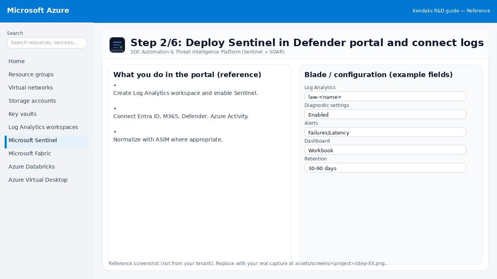
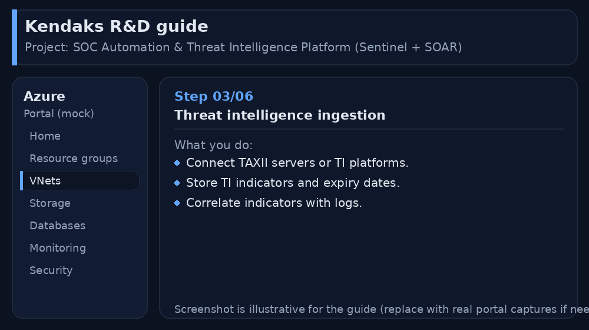
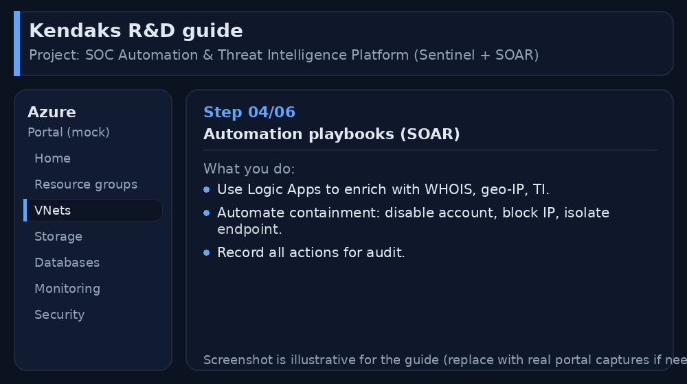
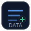
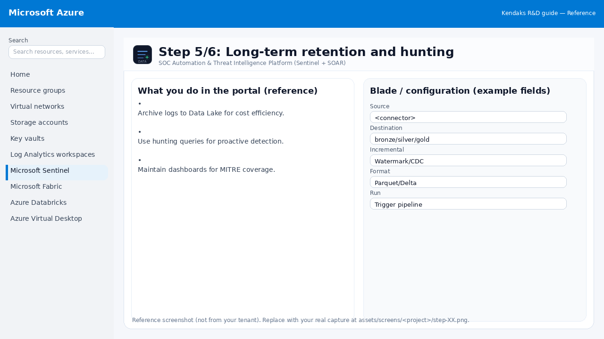
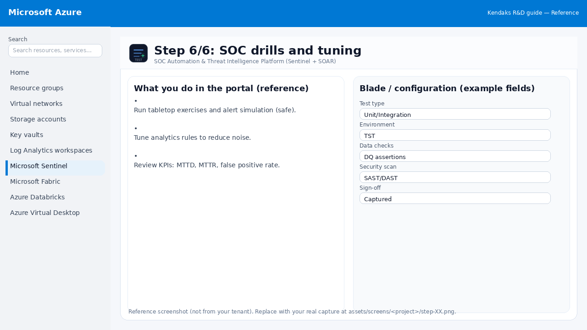

SOC Automation & Threat Intelligence Platform (Sentinel + SOAR)
Category: Security
Scenario: SOC wants automated enrichment and consistent incident handling. Example: 'Kendaks SOC' ingests TI feeds (TAXII), enriches alerts, and auto-opens tickets.
Architecture diagram
High-level view of the main components and data/control flows.
Low-level architecture diagram (Visio-style)
Implementation view (networking, security, ops). Click to open full size.
Low-level architecture details
(No low-level text provided.)
Step-by-step implementation
Step 1/6

Define SOC use cases and data sources
 Reference portal screenshot (click to zoom). Replace with your tenant capture if needed.
Reference portal screenshot (click to zoom). Replace with your tenant capture if needed.
- Identify top alert categories (phishing, malware, impossible travel).
- Choose data connectors and ingestion strategy.
- Define incident severity matrix.
Validation checklist
- Stakeholders have signed off the scope, SLAs, and data/security requirements.
- You have documented naming standards, environments, and ownership (RACI).
Step 2/6

Deploy Sentinel in Defender portal and connect logs

Reference portal screenshot (click to zoom). Replace with your tenant capture if needed.
- Create Log Analytics workspace and enable Sentinel.
- Connect Entra ID, M365, Defender, Azure Activity.
- Normalize with ASIM where appropriate.
Validation checklist
- Logs and metrics are flowing (check Log Analytics / Monitor).
- Alerts trigger correctly (test alert path to email/Teams/ITSM).
Step 3/6

Threat intelligence ingestion

Reference portal screenshot (click to zoom). Replace with your tenant capture if needed.
- Connect TAXII servers or TI platforms.
- Store TI indicators and expiry dates.
- Correlate indicators with logs.
Validation checklist
- Connections/authentication succeed and test messages/records flow through.
- Retries/DLQ/error handling are configured and validated with a forced failure.
Step 4/6

Automation playbooks (SOAR)

Reference portal screenshot (click to zoom). Replace with your tenant capture if needed.
- Use Logic Apps to enrich with WHOIS, geo-IP, TI.
- Automate containment: disable account, block IP, isolate endpoint.
- Record all actions for audit.
Validation checklist
- Security baseline applied (Defender/Policy/WAF/Firewall rules as applicable).
- No public endpoints unless explicitly approved; private endpoints verified where applicable.
- Alerts are configured for high-risk events.
Step 5/6

Long-term retention and hunting

Reference portal screenshot (click to zoom). Replace with your tenant capture if needed.
- Archive logs to Data Lake for cost efficiency.
- Use hunting queries for proactive detection.
- Maintain dashboards for MITRE coverage.
Validation checklist
- The storage/lakehouse/warehouse resources are created and accessible via least privilege.
- A sample dataset lands successfully and can be queried/read end-to-end.
- Retention, encryption, and backup settings match requirements.
Step 6/6

SOC drills and tuning

Reference portal screenshot (click to zoom). Replace with your tenant capture if needed.
- Run tabletop exercises and alert simulation (safe).
- Tune analytics rules to reduce noise.
- Review KPIs: MTTD, MTTR, false positive rate.
Validation checklist
- UAT completed with representative users and scenarios.
- Performance meets baseline; issues tracked and remediated.